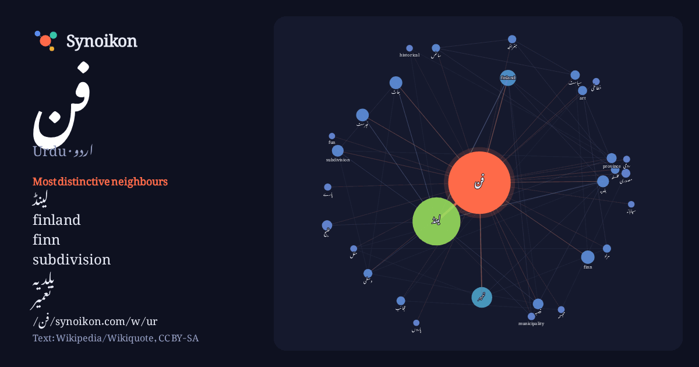

اردو · Urdu · popular word
فن
“art” · The words found around it in 1130 instances from Urdu Wikipedia, Wikiquote.

Most distinctive neighbours
- لینڈ 218×
- finland 61×
- finn 44×
- subdivision 35×
- بلدیہ 29×
- تعمیر 29×
- جات 26×
- province 24×
- خلیج 23×
- art 21×
- قصبہ 21×
- فہرست 18×
- مصوری 18×
- عجائب 17×
- جغرافیہ 16×
- فلسفہ 15×
- پارے 13×
- خطاطی 13×
- municipality 12×
- historical 12×
× = how many times more often than in general Urdu Wikipedia text.
Most frequent neighbours
- لینڈ 578
- کا 280
- میں 218
- تعمیر 107
- جو 100
- واقع 86
- سے 72
- finland 65
- finn 45
- جات 41
- فہرست 40
- اس 39
- بلدیہ 36
- subdivision 35
- کو 33
- شہر 31
- قصبہ 29
- مشتمل 29
- تاریخ 27
- خلیج 27
In context
- فن کے دوسرے استعمال کے لیے دیکھیے: فنیات فن (art)، عناصر کو ارادتاً اور تخلیقاً ایسے ترتیب دینے کی عملیت یا ماحصل جو احساسات و جذبات کو اپنی طرف راغب Wikipedia snippets · فن
- فن لینڈ براعظم یورپ کے شمال میں واقع ہے۔ اس کی کل آبادی 55 لاکھ ہے جن میں سے 2 لاکھ افراد غیر ملکی ہیں۔ اس کے جنوب میں خلیج فن لینڈ(سوؤمِن لاھتی)، شمال Wikipedia snippets · فن لینڈ
- فن تعمیر یا فارسی فن تعمیر (انگریزی: Iranian architecture) (فارسی: معماری ایرانی) ایران اور مغربی ایشیا کے دیگر حصوں اور وسط ایشیا میں قفقاز کا فن تعمیر Wikipedia snippets · ایرانی فن تعمیر
- خلیج فن لینڈ ہلسنکی، خلیج فن لینڈ ٹالن، خلیج فن لینڈ خلیج فن لینڈ کرونسٹاڈت، خلیج فن لینڈ دریائے نیوا جزائر، خلیج فن لینڈ خلیج فن لینڈ خلیج فن لینڈ جنگ Wikipedia snippets · خلیج فن لینڈ
- وسطی فن لینڈ (انگریزی: Central Finland) فن لینڈ کا ایک فن لینڈ کے علاقہ جات جو فن لینڈ میں واقع ہے۔ وسطی فن لینڈ کا رقبہ 19,950.38 مربع کلومیٹر ہے اور Wikipedia snippets · وسطی فن لینڈ
- لاپلند (فن لینڈ) (انگریزی: Lapland (Finland)) فن لینڈ کا ایک فن لینڈ کے علاقہ جات جو فن لینڈ میں واقع ہے۔ لاپلند (فن لینڈ) کا رقبہ 98,984 مربع کلومیٹر Wikipedia snippets · لاپلند (فن لینڈ)
- فن لینڈ 19 علاقہ جات پر مشتمل ہے۔ The role that the regional councils serve on Mainland Finland are, in Åland, handled by the autonomous Government of Wikipedia snippets · فن لینڈ کے علاقہ جات
- فن لینڈ (یورپی پارلیمان انتخابی حلقہ) (انگریزی: Finland (European Parliament constituency)) فن لینڈ کا ایک یورپی پارلیمان حلقہ انتخاب جو فن لینڈ میں واقع Wikipedia snippets · فن لینڈ (یورپی پارلیمان انتخابی حلقہ)
More Urdu words
Precomputed on 2026-10-09 with default settings (±5 words, medium corpus). The interactive map can refresh it with live data.